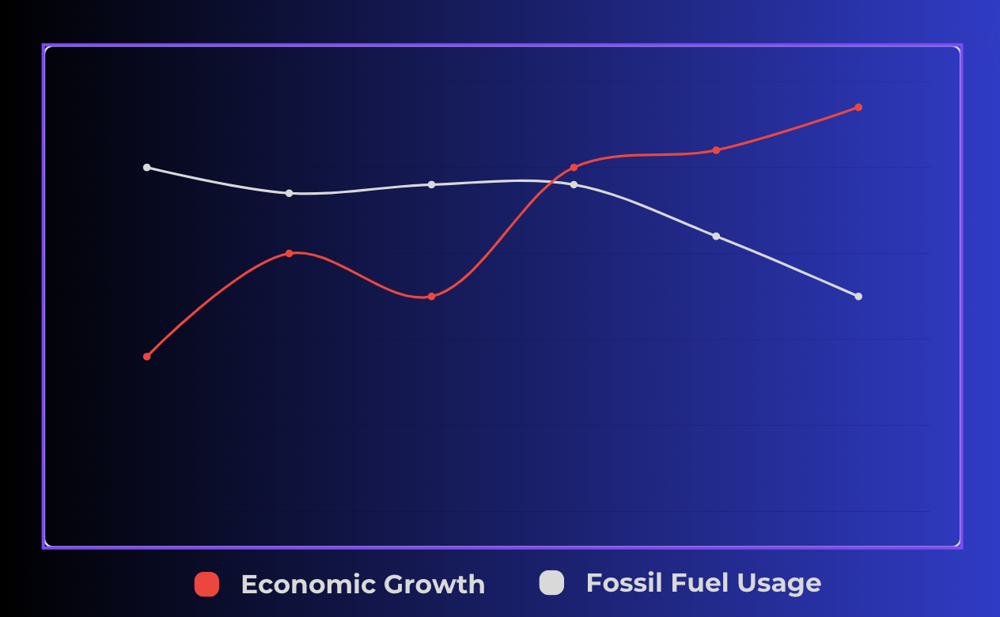

As fossil fuel usage has steadily declined, the creation of green jobs has surged in the opposite direction. While urban areas have continued to grow, efforts to combat climate change are showing promising improvements.
Finish the week.
